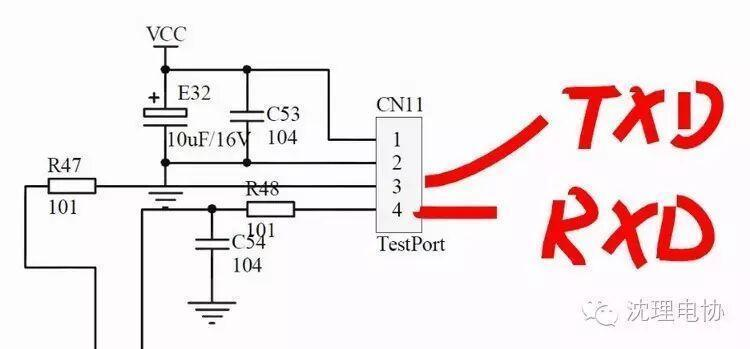
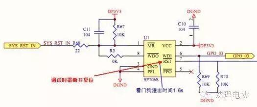

【电协干货】看门狗


看门狗简介
软件看门狗技术的原理和硬件的差不多，只不过是用软件的方法实现，还是以51系列来讲，我们知道在51单片机中有两个定时器，我们就可以用这两个定时器来对主程序的运行进行监控。我们可以对T0设定一定的定时时间，当产生定时中断的时候对一个变量进行赋值，而这个变量在主程序运行的开始已经有了一个初值，在这里我们要设定的定时值要小于主程序的运行时间，这样在主程序的尾部对变量的值进行判断，如果值发生了预期的变化，就说明T0中断正常，如果没有发生变化则使程序复位。对于T1我们用来监控主程序的运行，我们给T1设定一定的定时时间，在主程序中对其进行复位，如果不能在一定的时间里对其进行复位，T1 的定时中断就会使单片机复位。在这里T1的定时时间要设的大于主程序的运行时间，给主程序留有一定的的余量。而T1的中断正常与否我们再由T0定时中断子程序来监视。这样就够成了一个循环，T0监视T1，T1监视主程序，主程序又来监视T0，从而保证系统的稳定运行。
看门狗（软件）系列

概述
51 系列单片机有专门的看门狗定时器，对系统频率进行分频计数，定时器溢出时，将引起复位。看门狗可设定溢出率，也可单独用来作为定时器使用。
锐聚
锐聚地磅看门狗是采用特定的频率模块，在企业称重，衡器检查，计量防护等领域有不可代替的作用。地磅防作弊器是一种对地磅防止作弊的一种防作弊仪器，它在有效工作范围内对地磅无线遥控信号进行捕获，分析和处理，对作弊信号进行屏蔽,实时监测，记录和数据锁定，帮助企业免受不法侵害，也叫地磅看门狗。
凌阳61
凌阳61的看门狗比较单一，一个是时间单一、第二是功能在实际的使用中只需在循环当中加入清狗的指令就OK了。
AVR
AVR系列中，avr-libc 提供三个API 支持对器件内部Watchdog 的操作，它们分别是：
wdt_reset() // Watchdog 复位
wdt_enable(timeout) // Watchdog 启用wdt_disable() // Watchdog 禁止
C8051Fxxx单片机内部也有一个21位的使用系统时钟的定时器，该定时器检测对其控制寄存器的两次特定写操作的时间间隔。如果这个时间间隔超过了编程的极限值，将产生一个WDT复位。
看门狗使用注意事项

大多数51 系列单片机都有看门狗，当看门狗没有被定时清零时，将引起复位。这可防止程序跑飞。也可以防止程序在线运行时候出现死循环。设计者必须清楚看门狗的溢出时间以决定在合适的时候，清看门狗。清看门狗也不能太过频繁否则会造成资源浪费，程序正常运行时，软件每隔一定的时间（小于定时器的溢出周期）给定时器置数，即可预防溢出中断而引起的误复位。
看门狗设计思路
系统软件"看门狗"的设计思路：
1.看门狗定时器T0的设置。在初始化程序块中设置T0的工作方式，并开启中断和计数功能。系统Fosc=12 MHz，T0为16位计数器，最大计数值为（2的16次方）-1=65 535，T0输入计数频率是．Fosc/12，溢出周期为（65 535+1）/1=65 536（μs）。
2.计算主控程序循环一次的耗时。考虑系统各功能模块及其循环次数，本系统主控制程序的运行时间约为16．6 ms。系统设置"看门狗"定时器T0定时30 ms(T0的初值为65 536-30 000=35 536）。主控程序的每次循环都将刷新T0的初值。如程序进入"死循环"而T0的初值在30 ms内未被刷新，这时"看门狗"定时器T0将溢出并申请中断。
3.设计T0溢出所对应的中断服务程序。此子程序只须一条指令，即在T0对应的中断向量地址(000BH）写入"无条件转移"命令，把计算机拖回整个程序的第一行，对单片机重新进行初始化并获得正确的执行顺序。

编/高天